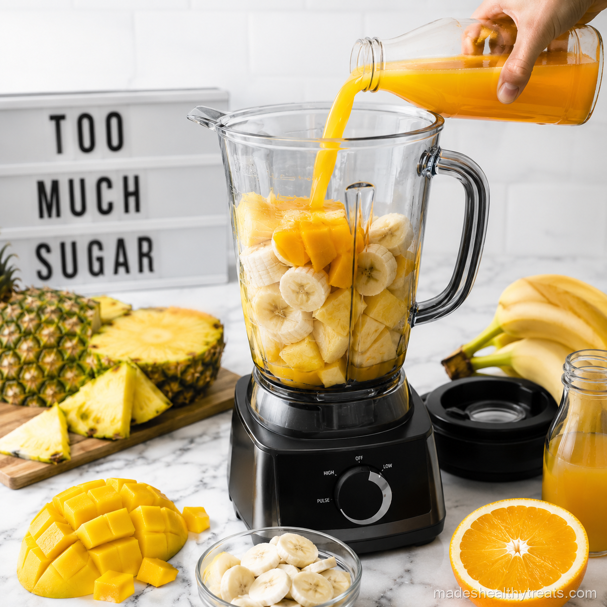
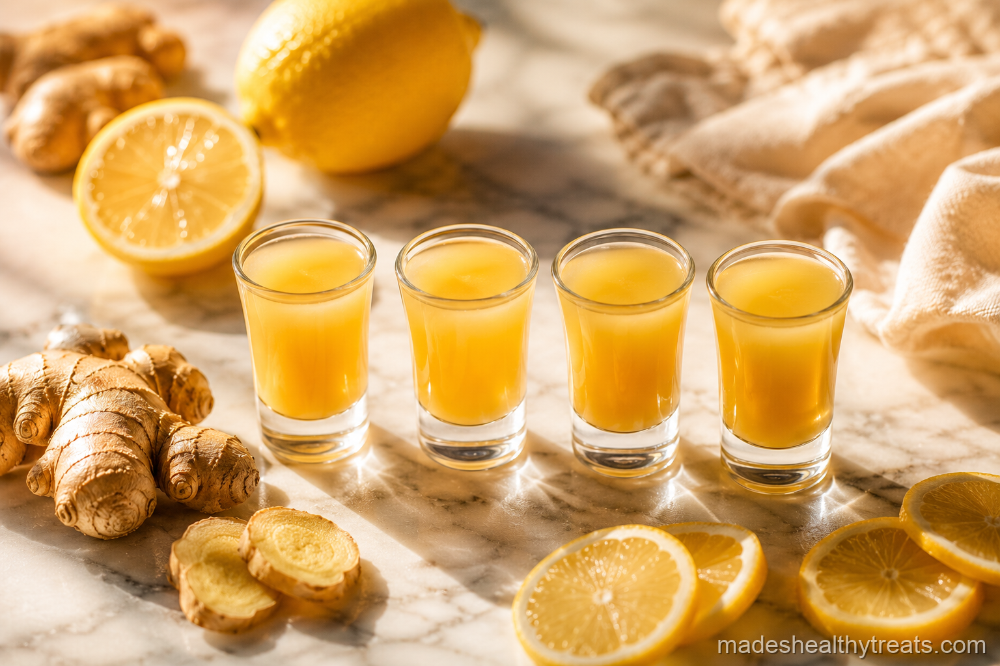
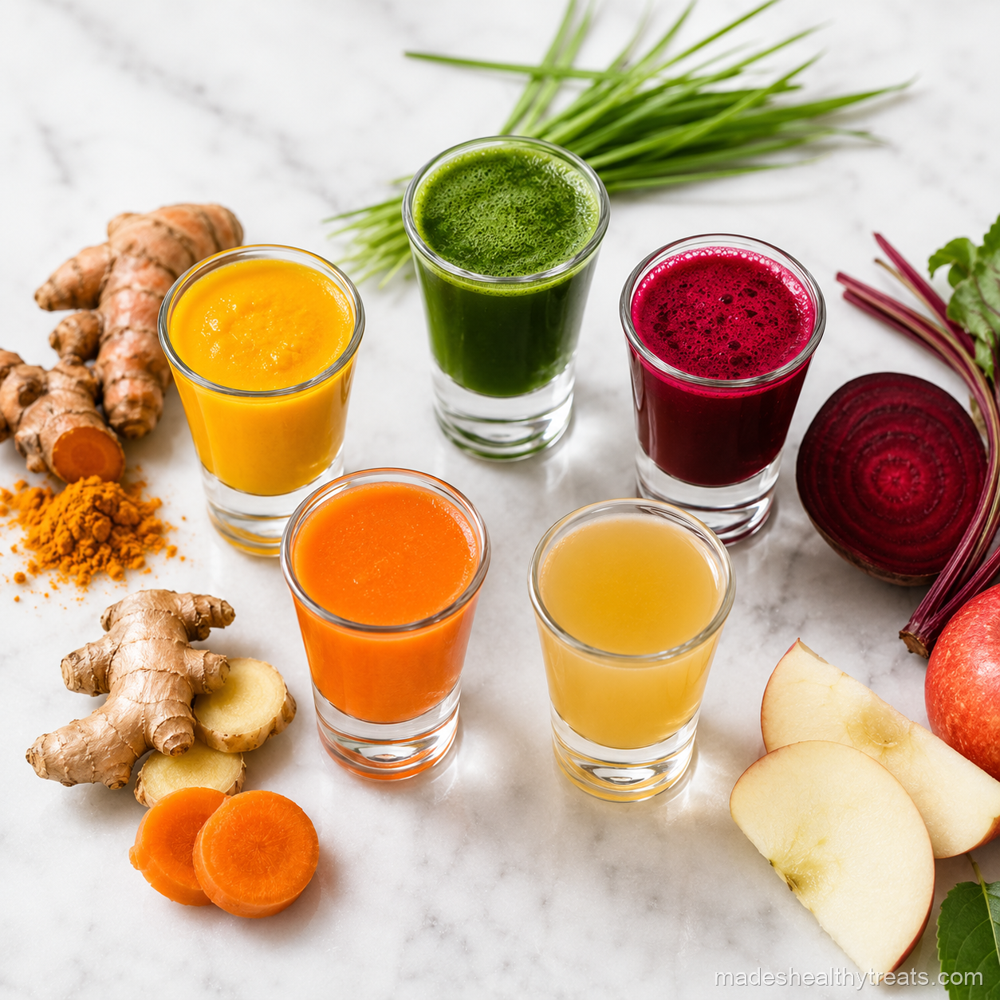
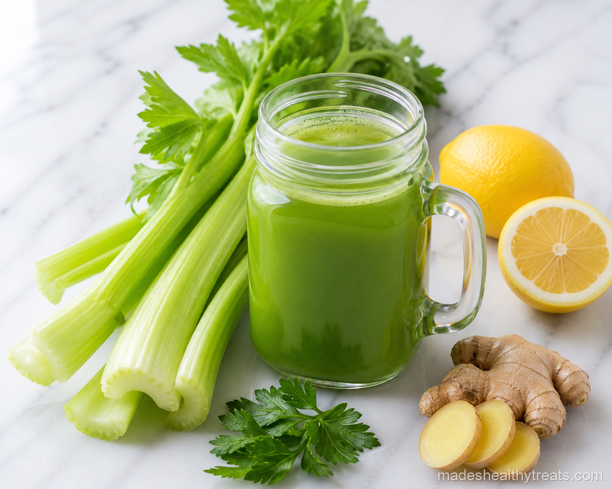
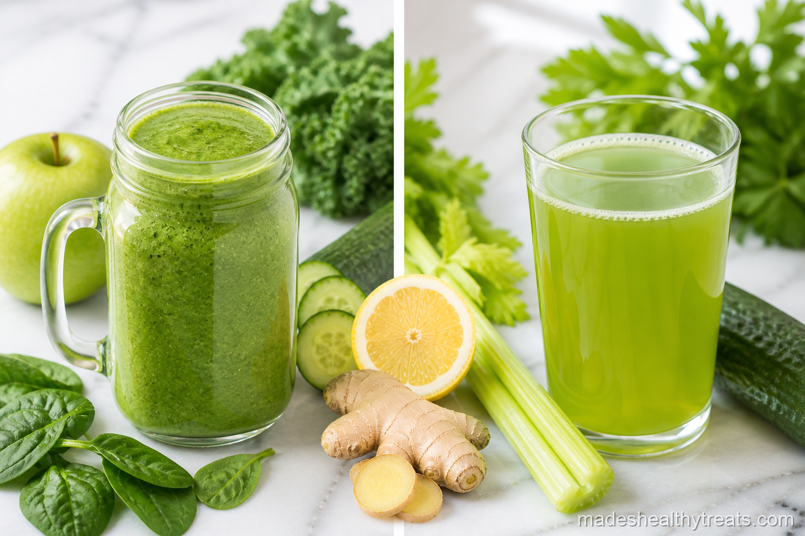

From the Blog
Find measured recipe ideas, ingredient swaps, shopping plans, and practical answers for your next blend.

Green Smoothies Every Day: A Practical Guide to Making Them
A flexible green smoothie formula, easy substitutions, and answers to common preparation questions.
Read more →
Dairy-Free Smoothies: 3 Creamy Combinations Without Yogurt
Make creamy smoothies without dairy using three measured combinations, a plant-milk comparison, and fixes for watery or gritty blends.
Read more →
Smoothies Without Banana: What to Use for Thickness and Sweetness
Replace banana by its job in a smoothie, with three measured banana-free combinations and practical fixes for thickness, sweetness, and flavor.
Read more →
Five Smoothie Packs From One Short Shopping List
Prepare five smoothie packs with shared ingredients, exact batch totals, a small-freezer option, and a simple way to calculate your own ingredient costs.
Read more →
7 Common Smoothie Problems and How to Fix Them
Fix watery, bitter, gritty, or overly sweet smoothies with practical ingredient and blender adjustments.
Read more →
Do Juice Cleanses Work? Evidence, Limits, and a Better Use for Juice
A clear look at juice-cleanse claims, the limits of the evidence, and practical ways to enjoy juice with ordinary meals.
Read more →
Ginger Shots Without a Juicer: 3 Small-Batch Variations
Make a ginger shot with a blender and strainer. Includes a basic recipe, milder variations, storage notes, and realistic ginger cautions.
Read more →
Wellness Shots: What They Are, How They Taste, and What to Check
Understand small juice shots, compare ingredients and claims, and make a drink that suits your taste without treating it as medicine.
Read more →
Morning Juice Ideas: Choose by Flavor and What You Have
Choose a morning juice by flavor, equipment, and ingredients, with bright citrus, mild cucumber, and earthy beet options.
Read more →
Beet Juice: Earthy Flavor, Easy Pairings, and Research Limits
Make beet juice easier to enjoy and understand why blood-pressure research does not make a homemade drink a treatment.
Read more →Green Smoothies Every Day: A Practical Guide to Making Them
How to build a green smoothie with ingredients you like, adjust its texture and sweetness, and prepare it safely.
Read more →
5 Protein Smoothies Without Powder: Ingredients and Easy Swaps
Five powder-free smoothie combinations with clear measurements, dairy-free swaps, and tips for adjusting thickness and sweetness.
Read more →Smoothie Meal Prep: Freezer Packs for Easier Mornings
Make smoothie freezer packs with three flexible combinations, clear prep steps, labeling tips, and sensible storage guidance.
Read more →
Do Fat-Burning Smoothies Work? What to Look for Instead
Understand fat-burning smoothie claims and build a drink around taste, portions, and ingredients that fit your meals.
Read more →
Celery Juice: Taste, Blender Prep, and What the Claims Miss
Make celery juice taste better, choose whether to strain it, and understand why detox promises need evidence.
Read more →
How to Make Juice Without a Juicer: Blender Method and 3 Combinations
A practical guide to blender juice: equipment, blending and straining steps, three flavor ideas, pulp uses, and food safety.
Read more →
Smoothies vs. Juice: Texture, Pulp, Equipment, and Everyday Use
Compare blending and juicing by texture, pulp, cleanup, and how you plan to serve the drink.
Read more →
How Much Ginger to Put in a Smoothie: Flavor, Prep, and Easy Pairings
Use fresh or ground ginger in a smoothie with sensible starting amounts, ingredient pairings, and practical flavor fixes.
Read more →
10 Smoothie Ingredients and What They Actually Add
Choose smoothie ingredients by flavor and texture, with ten practical options and tips for using small amounts.
Read more →
Kefir and Yogurt Smoothies: Taste, Labels, and Probiotic Claims
Choose kefir or yogurt for smoothie texture, read culture and nutrition labels, and understand the limits of probiotic promises.
Read more →